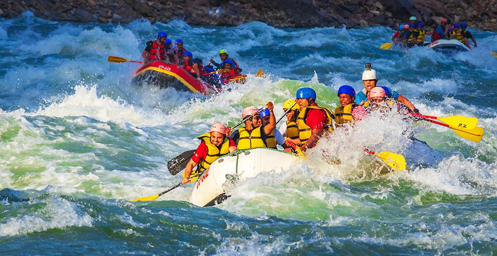
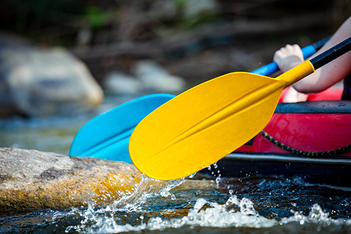

About Us
Our Mission

Welcome to White Water Rafting! We offer exciting whitewater rafting adventures for all skill levels. Safety, fun, and unforgettable memories are our mission!
History
Founded in 2005, White Water Rafting has been delivering thrilling rafting experiences for over 15 years. Our guides are trained professionals dedicated to your adventure.
Adventure Awaits You!
Join us for a whitewater adventure! Our trips cater to families, beginners, and thrill-seekers alike. Discover your next unforgettable experience with us!


